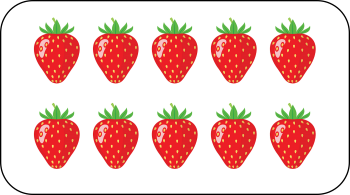
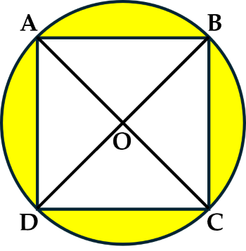
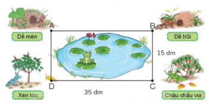
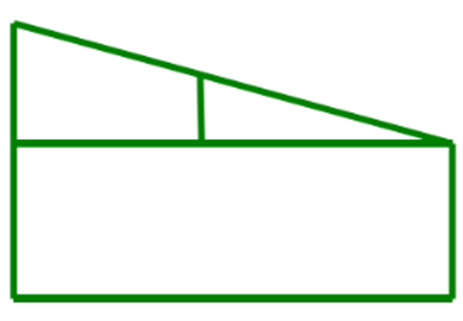

Cảm ơn bạn đã tin tưởng và ủng hộ chúng tôi
Cảm ơn bạn đã tin tưởng và ủng hộ chúng tôi
Thông báo
Đánh dấu tất cả đã đọc
Không có thông báo nào chưa đọc.
Trang chủ
Lý thuyết
Lý thuyết theo lớp
Ký hiệu toán học
Bài tập
Làm bài theo bài học SGK
Luyện thi
Theo dõi quá trình
Lịch sử
Năng lực
Ôn hôm nay
Báo cáo tuần cho phụ huynh
Hướng dẫn sử dụng
Trang này đang được nâng cấp về giao diện và chức năng
Toán lớp 3 · Cuối học kì 1 · 8 câu · thang 10 điểm · 60 phút · nạp từ đề thi thật
‹ Trước
Sau ›
Thời gian còn lại
1:00:00
Nộp bài
Rời phòng thi
1
2
3
4
5
6
7
8
Câu 1.
Đại số
Phần I — Trắc nghiệm chọn một phương án
1,25 điểm
Một ô tô có 4 bánh xe. Hỏi 10 ô tô như thế có bao nhiêu bánh xe?
A)
40
B)
32
C)
28
D)
20
Câu 2.
Đại số
Phần I — Trắc nghiệm chọn một phương án
1,25 điểm

$\dfrac{{1}}{{5}}$ số quả dâu tây có trong hình trên là
A)
4 quả dâu tây.
B)
1 quả dâu tây.
C)
2 quả dâu tây.
D)
5 quả dâu tây.
Câu 3.
Đại số
Phần I — Trắc nghiệm chọn một phương án
1,25 điểm
Kết quả của phép tính 125 + 345 : 5 là
A)
194
B)
95
C)
94
D)
195
Câu 4.
Đại số
Phần I — Trắc nghiệm chọn một phương án
1,25 điểm
Một hộp bánh chứa được nhiều nhất 4 cái bánh. Nếu có 75 cái bánh thì cần ít nhất bao nhiêu cái hộp như thế?
A)
19
B)
21
C)
20
D)
18
Câu 5.
Hình học
Có vẽ hình
Phần I — Trắc nghiệm chọn một phương án
1,25 điểm
Cho hình vuông ABCD nằm trong hình tròn tâm O như hình vẽ. Biết AC = 10 cm. Độ dài bán kính của hình tròn tâm O là

A)
3 cm
B)
8 cm
C)
5 cm
D)
10 cm
Câu 6.
Hình học
Có vẽ hình
Phần I — Trắc nghiệm chọn một phương án
1,25 điểm
Nhà các bạn dế mèn, dế trũi, châu chấu voi và xén tóc ở bốn đỉnh của hình chữ nhật ABCD ( như hình vẽ ).

Biết rằng CD = 35 dm, BC = 15 dm. Độ dài quãng đường từ nhà dế mèn đến nhà châu chấu voi là
A)
15 dm
B)
5 m
C)
50 cm
D)
35 dm
Câu 7.
Hình học
Có vẽ hình
Phần II — Trắc nghiệm trả lời ngắn
1,25 điểm
Viết số thích hợp vào chỗ chấm:

Hình trên có ☐ góc vuông.
Điền số — gõ kết quả em tính được vào ô.
Kết quả:
Câu 8.
Đại số
Phần III — Trắc nghiệm chọn một phương án
1,25 điểm
Có hai xe ô tô chở đoàn khách đi tham quan viện bảo tàng. Xe thứ nhất chở 16 người. Xe thứ hai chở số người gấp đôi xe thứ nhất. Hỏi hai xe chở được tất cả bao nhiêu người?
A)
16
B)
32
C)
48
D)
35
📖 Lý thuyết
Thông báo
Xác nhận